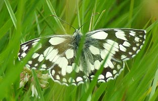
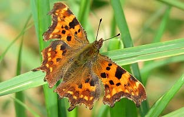
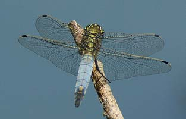
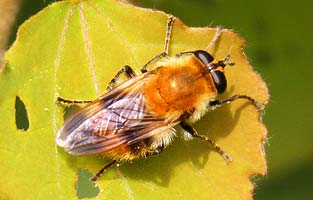

|  |  |
| Home | Recent | Species | Birds | Fish | Mammals | Insects | Fungi | Snaps | Wallpaper | Links | Contact |
Insects
Butterflies and Moths
The Meadows can be good for Butterflies though only a few species like Meadow Brown were common in 2012 and 2013 after very poor weather and flooding in 2012.




Other insects and Spiders




If anyone has information or observations on the insects at Chard reservoir:
email me: kevbirder@gmail.com